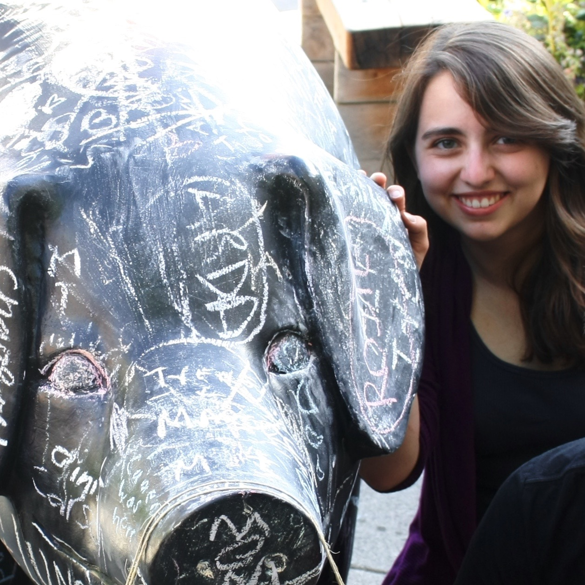

	<div class="page-content">
		<p>
			

			Hi, I am a Software Developer studing Computer Science at <a class="main-link" href="/college">Rensselaer Polytechnic Institute</a> in Troy, NY. <br><br>
			When not working on my next programming project, you can find me taking photos, enjoying the outdoors, doing community service, working on puzzles of any and all sorts, or reading a good book. <br><br>During the year, you might be able to find me working with the <a class="main-link" href="/projects#RCOS">Rensselear Center for Open Source</a> or <a class="main-link" href="/college#EHC">Embedded Hardware Club</a>.  This semester, I'm also helping out over at RPI's <a class="main-link" href="/college#VCC">Computing Center Help Desk</a> and <a class="main-link" href="/college#DS">mentoring Data Structures</a>.  Else, I'm probably off working with the other brothers of my Service Fraternity, <a class="main-link" href="/college#APO" >Alpha Phi Omega</a>, helping out around campus or in the local community. For the summer, I'll be hanging out in Redmond, Washington, working with Microsoft's Office365 Foundations Engineering team.


		</p>
	</div>
